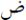

[4] Metinde geçen "zamân" kelimesi, Arapça «» "dad" harfi ile yazılır ve bildiğimiz vakit, süre anlamına gelen zaman/zeman kelimesinden farklı olarak "kefil olma, kefillik, bir şeyin mislini veya değerini vermek üzere zarara karşı kefil olma, garanti" gibi anlamlara gelir. Bu iki kelimenin metinde karışmaması için vakit, süre anlamında gelen kelimeyi «zaman», kefil olma, garanti anlamındaki kelimeyi de «zamân» imlasıyla kullanmayı uygun bulduk. Bkz. Şemseddin Sami, Osmanlıca Kâmûs-ı Türkî-Tıpkıbasım, Çağrı Yayınları, İstanbul 1996, s. 854.